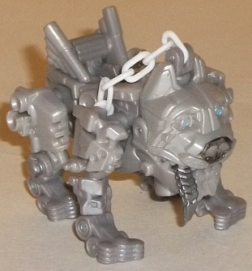
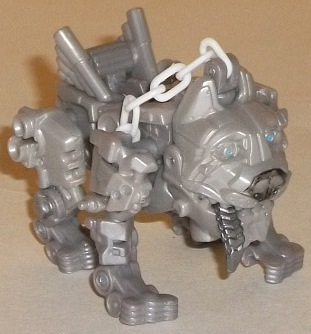

Allegiance : Autobot
Difficulty of Transformation : Very Easy
Color Scheme : Light brownish milky gray and some white, light sky blue, black, and metallic gunmetal gray
Individual Rating : 4.6
 Steeljaw
Steeljaw

Allegiance
: Autobot
Difficulty of Transformation
: Very
Easy
Color Scheme
: Light brownish milky
gray and some white, light sky blue, black, and metallic gunmetal gray
Individual Rating
: 4.6
Steeljaw isn't a character
made up solely for a toy-- he actually got far enough along in production
for the movie where there was concept art released for him. He was originally
supposed to become Leadfoot's engine block, though he does no such thing
with Human Alliance Leadfoot. His "normal" mode is a pitbull-like dog,
but with a cute goofy expression on his oversized face, his metallic tongue
hanging out one side of his mouth. He's also got a plastic chain attached
to the top of his head for Leadfoot to lead him around with. (I wish the
chain was just a TOUCH longer, as it often looks like Leadfoot is practically
strangling his dog in most of the larger TF's positions.) There's plenty
of engine-like detailing on Steeljaw, like cylinders everwhere and exhaust
pipes along his backside. He's almost entirely milky brownish gray, which
is pretty boring-looking but does help make him look a bit more like a
"dirty engine". The few paint apps he has are on his face, with his eyes
painted blue, his nose black, and his tongue silver. They're nice little
accents, but they don't contribute enough to the color scheme to really
change it. Steeljaw has a surprising amount of articulation in this mode
for such a small toy; he can move at the shoulders and hips, as well as
two points further down on each leg. In addition, his head can look up
a pretty substantial amount due to his transformation, his mouth can open,
and his tongue can waggle slightly (and all this isn't counting all those
links in his chain). So, no issues with this mode, really, other than him
not being able to store his missile somewhere.
Steeljaw's "gun mode"
is, unfortunately, where this little sidekick suffers. If it wasn't for
the missile launcher sticking out of the front, I wouldn't recognize it
as a gun at all-- it's clearly just the dog mode with the head turned backwards
and the legs scrunched up at the sides. Sliding back the exhaust vent piece
near his back fires the spring-loaded missile. He can be plugged onto the
back of either of Leadfoot's lower arms, and it's nice that Leadfoot gets
his own little weapon, but it's very, very poor as a gun. I mostly just
like to forget about it, honestly.
 Leadfoot
w/ Sergeant Detour
Leadfoot
w/ Sergeant Detour
Allegiance
: Autobot
Difficulty of Transformation
: Hard
Color Scheme
: Pale light milky brown,
red, black, dull bronwish milky gray, transparent brownish-tinted plastic,
and some white, metallic gunmetal gray, moderately light tan, light sky
blue, and transparent blue
Individual Rating
: 7.0
It's quite rare for a
store to get its own exclusive mold-- particularly one this big and complex--
but, it's obvious Target paid a lot to have a NASCAR with its main logo
as one of the TF alt modes in a movie, so here's what they get out of it.
Unlike his fellow Wrecker
Roadbuster
,
Leadfoot's Human Alliance vehicle mode isn't "Stealth Force", but rather
just a more normal NASCAR car mode. As you'd expect from a Human Alliance
vehicle, the proportions in this mode are perfect, and there's basically
no robot mode extras-- you can see a touch of his legs if you look in the
rear window of the car mode, but that's pretty much it. His color scheme
of red and black with some white is basic, but looks quite nice, with all
the colors contrasting off of all the others quite well. Although he's
not covered in corporate logos like the actual NASCAR car he's based off
of, he has a decent amount on him; the NASCAR logo, Target, Chevrolet,
Cottonelle, Tums, Energizer, and Lysol all have their logos plastered on
this mode, and they keep him from having too much uninterrupted red. His
transparent plastic is a bit of a different story color-wise, being a bit
of a dirty brown tinted color that just doesn't look all that great. As
is typical with Human Alliance toys, both of his doors can open, and there's
two seats inside for you to fit Human Alliance human figurines inside Leadfoot.
The figurine that comes with Leadfoot is Sergeant Detour, though he looks
like a typical dude in a NASCAR race suit with a Target logo on it. He
has all the typical articulation that your normal human figurine in this
line has, and is generally pretty unremarkable.
Leadfoot's robot mode
is one where you'll look at the instructions several times to make sure
you're not missing anything; it gets close in several respects, but it
just looks... unfinished. For starters, a lot of parts don't peg or slot
into each other-- particularly the parts behind his stomach and side doors,
as well as the flap in front of his waist. The biggest offender in this
mode is definitely the rather large, unsightly gap in between both his
shoulders and the side doors, as well as between his head/neck area and
where his stomach begins. You can fit Sergeant Detour in the latter with
little "throttle sticks" for him to hold onto, but it looks extremely odd.
Leadfoot's arms are a bit too skinny and two-dimensional, particularly
the lower portions, and the shoulders stick out a bit too far from the
neck and head. Leadfoot's car roof accordions up against his back decently
enough to stay out of the way of movement, but it's a bit more blatant
of a backpack here than on most other Human Alliance figures. There's also
a mere rectangular panel with robotic detailing on it that hangs out in
front of his waist-- this may be okay at smaller scales, but at this size
I don't want a part of the car mode that simply has detailing on the other
side of it for a robot part. Three fairly ugly shades of brown/gray also
rear their heads in this mode, and just don't look that good against Leadfoot's
more primary colors from car mode. On the plus side, his mold detailing
in this mode is spectacular, with little springs, pistons, and the like
molded on every square inch of his robot bits. Additionally, his legs are
pretty well-proportioned compared to how he appears in the movie, with
the couple of "car bits" on his legs staying out of the way and generally
in a set place here. Using the front wheels to form his "gut" was also
an intriguing move, though his stomach still isn't nearly as bulbous as
it is in the movie. His headsculpt is spot-on, though, with all the right
paint detailing where needed, and just like with Roadbuster, you can open
up Leadfoot's forehead to store/bring out his transparent blue "visor"
over his normal eyes. For articulation, he can move at the neck, shoulders
(at four points), elbows (at four points), at the wrists, at the base of
each thumb, at the base of the four fingers on each hand (as one piece),
and at the waist, hips (at three points), knees, ankles (at two points),
and slightly at the base of the toes on each foot. His door panels can
get in the way of shoulder movement quite a bit, though, as can his waist
panel in front of his waist, so he isn't quite as articulated as the above
description would make you expect, though this is still definitely one
of his strengths.
Human Alliance Leadfoot
w/ Steeljaw is generally a poor set of toys for the subline. Steeljaw has
a great dog mode, but his missile launcher mode isn't passable at all.
As for Leadfoot, his car mode looks great, but his robot mode suffers from
some major proportional awkwardness that it shouldn't, the biggest offenders
being the large gaps in between his shoulders/head and stomach/car doors.
(On a side note, by loosening the screws on his side doors slightly, you
can end up bending the car doors to be at a slight angle in this mode to
help partially cover up that gap, but I'm reviewing this toy as is-- and
even if you do the "fix", the gap is still most definitely there.) Unfortunately,
if you want a larger Leadfoot toy for a relatively affordable price this
is pretty much your only option, but I'd only get it if you really like
the character, as this mold definitely has its flaws.
Reviews by Beastbot